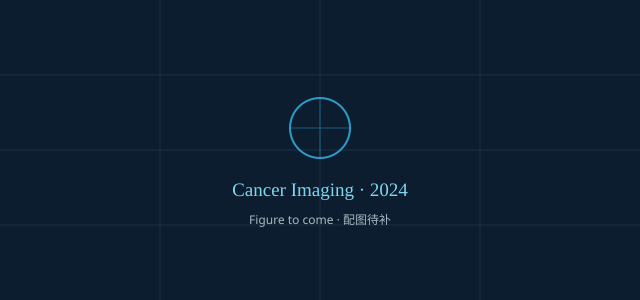
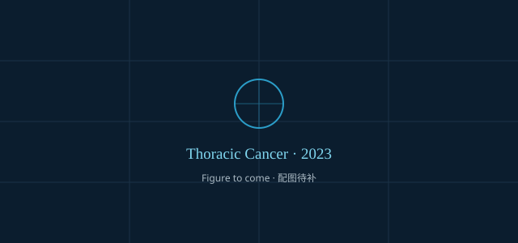
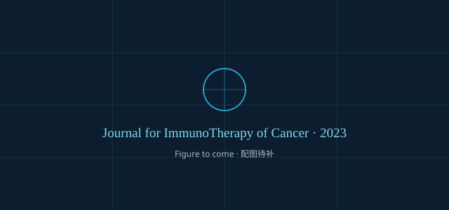
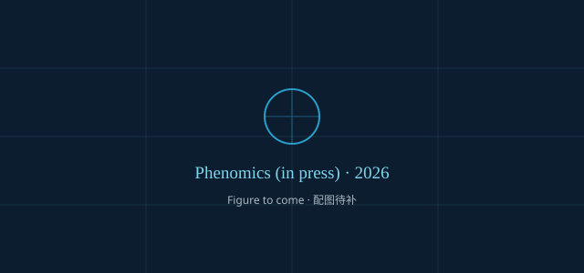

By Method · 05
Radiomics and Predictive Modeling
Turning images into clinically actionable predictions: BRCA mutation triage from ultrasound, immunotherapy response in esophageal cancer and SCLC, MRI-based risk stratification, and quantitative PET harmonization.
Overview
Turning images into clinically actionable predictions: BRCA mutation triage from ultrasound, immunotherapy response in esophageal cancer and SCLC, MRI-based risk stratification, and quantitative PET harmonization.
- Ultrasound radiomics predicts germline BRCA mutations (Cancer Imaging 2024)
- Integrated clinical + radiomics outcomes in SCLC (JITC 2023)
- Model-based PET SUV harmonization (Phenomics, in press)
05 · Selected work
Selected work
Each card: figure on top, key points below.
01

Development and validation of ultrasound-based radiomics model to predict germline BRCA mutations in patients with breast cancer
Cancer Imaging · 2024
- Ultrasound radiomics predicts germline BRCA mutations.
- Non-invasive triage for genetic testing.
02

Contrast-enhanced CT-based radiomic analysis for determining the response to anti-programmed death-1 therapy in esophageal squamous cell carcinoma patients: A pilot study
Thoracic Cancer · 2023
- CT radiomics predicts anti-PD1 response in esophageal squamous cell carcinoma.
- Pilot study toward immunotherapy response prediction.
03

Assessing treatment outcomes of chemoimmunotherapy in extensive-stage small cell lung cancer: An integrated clinical and radiomics approach
Journal for ImmunoTherapy of Cancer · 2023
- Integrated clinical and radiomics model for SCLC chemoimmunotherapy outcomes.
- Supports treatment selection in extensive-stage disease.
04
3.0 T multi-parametric MRI combined with clinical features improve malignancy prediction of BI-RADS 4 lesions and preoperative prediction of Nottingham Prognostic Index
European Journal of Radiology Open · 2025
- Multi-parametric MRI plus clinical features refine BI-RADS 4 risk stratification.
- Preoperative prediction of the Nottingham Prognostic Index.
05

A Model-based Harmonization Strategy of Standard Uptake Values for Paired PET Studies
Phenomics (in press) · 2026
- Model-based harmonization of SUV values for paired PET studies.
- Removes scanner and protocol variability in longitudinal PET.